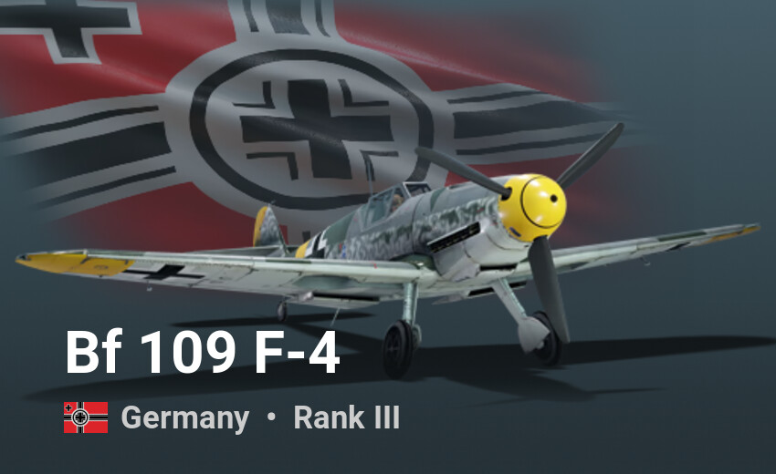
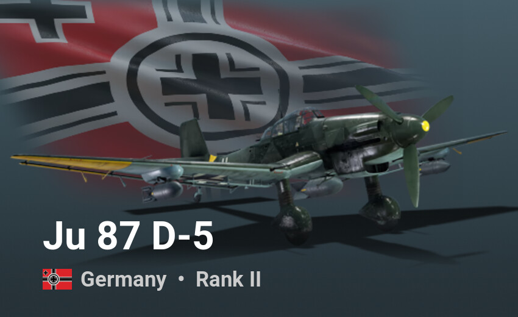
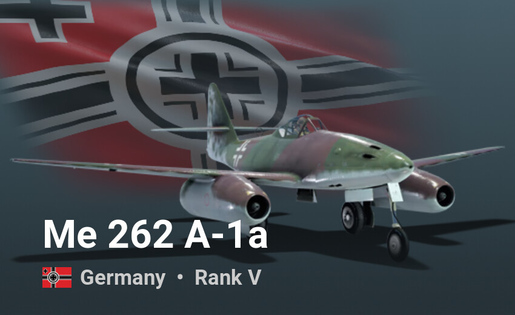
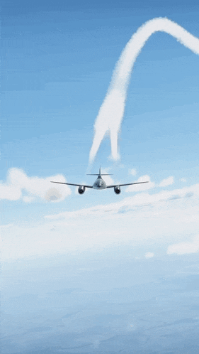
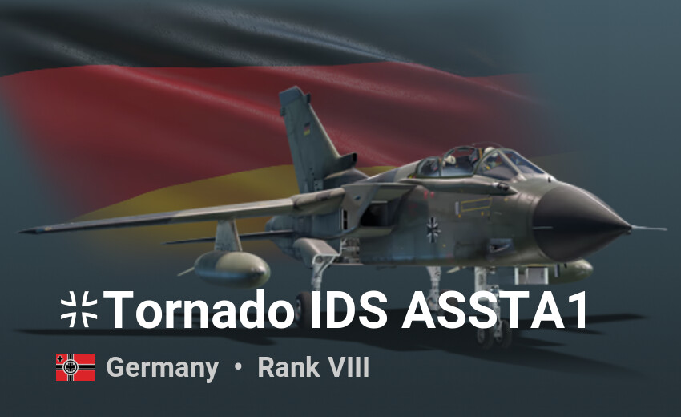

Losowe pojazdy yey

Messerschmitt Bf 109 – niemiecki samolot myśliwski, podstawowy myśliwiec Luftwaffe podczas II wojny światowej.
Bf 109 F (Friedrich)
to następca wersji E z tym samym silnikiem w wersji DB 601E – produkowany od przełomu 1940/1941. Płatowiec zmienił jednak diametralnie wygląd zewnętrzny: zastosowano nowy kołpak śmigła, zmieniono całkowicie przednią część kadłuba stosując bardziej zaokrągloną osłonę silnika oraz zmieniono kształt skrzydeł z prostokątnych na zaokrąglone. Prędkość maksymalna na pułapie 6000 m wynosiła 635 km/h. Uzbrojenie stanowiły dwa MG 17 i jedno działko 20 mm MG 151.
Podsumowanie:
-
Geneza i Podstawowe Warianty:
- Samolot (wersja F, prawdopodobnie Me 109F) opracowany na podstawie umów z Ministerstwem Lotnictwa Rzeszy w dwóch wariantach uzbrojenia:
- Lekki: działko MG 151/15.
- Ciężki: działko MG FF/M.
- Problemy z silnikiem spowodowały wyodrębnienie się czterech głównych wersji produkcyjnych:
- F-1 – wersja ciężka, silnik DB 601N.
- F-2 – wersja lekka, silnik DB 601N.
- F-3 – wersja ciężka, silnik DB 601E (następca F-1).
- F-4 – wersja lekka, silnik DB 601E (następca F-2).
-
Produkcja i Koszty:
- Cena (za sztukę):
- Wersje F-1 i F-2: 90 000 Reichsmarek (za 250 sztuk).
- Wersje F-3 i F-4: 70 000 Reichsmarek (za 450 sztuk).
- Średnia cena dla całego zamówienia 830 sztuk: 56 000 Reichsmarek.
- Obniżenie kosztów: skrócono czas montażu z 16 000 do 7 000 roboczogodzin na samolot.
-
Dodatkowe Plany i Służba:
- Plany na dużą liczbę samolotów w wariancie rozpoznawczym porzucono na rzecz maszyn bojowych.
- Wersja F cieszyła się przewagą w walkach powietrznych przez krótki okres – rok 1941.
-
Łączna Produkcja:
- Wyprodukowano łącznie 3 400 sztuk wersji Me 109F (wliczając prototypy).

Junkers Ju 87 Stuka (z niem. Sturzkampfflugzeug) – niemiecki bombowiec nurkujący z okresu II wojny światowej. Zaprojektowana przez Hermanna Pohlmanna i oblatana 17 września 1935 maszyna swój chrzest bojowy przeszła w 1938 roku podczas wojny domowej w Hiszpanii. W niemieckiej propagandzie samolot stał się symbolem wielkości Luftwaffe.
Ju 87 D (Dora)
Wbrew dobrej opinii, Stuki były bardzo słabo opancerzone i podatne na ataki, co było bardzo widoczne w czasie bitwy o Anglię, gdzie Luftwaffe straciło połowę stanu swoich samolotów. Jednak z powodu braku następcy, kontynuowano produkcję Ju 87, w rezultacie czego powstała seria D. W czerwcu 1941 r., RLM zamówiło pięć prototypów V21-V25. Ju 87 D-1 miał być wyposażony w silnik Daimler-Benz DB 603, jednak znacznie ustępował on osiągom Jumo 211 i po serii testów projekt zarzucono. Stuka serii D otrzymała lepszy system chłodzenia wody i oleju, bardziej aerodynamiczny kadłub oraz większą, lepiej rozplanowaną kabinę[56]. Dodatkowo zwiększono siłę obronną maszyny przez zastosowanie szybkostrzelnego karabinu maszynowego MG 81Z kalibru 7,92 mm. Wzrosła również moc silnika – montowane jednostki Jumo 211 J-1 lub Jumo 211 P dostarczały odpowiednio 1420 KM (1044 kW) lub 1500 KM (1104 kW).

Messerschmitt Me 262 Schwalbe – pierwszy użyty bojowo samolot myśliwski o napędzie odrzutowym produkowany seryjnie podczas II wojny światowej przez Niemcy. Wszedł do służby w 1944 jako samolot bombowy (A-2a) i rozpoznawczy (A-1a/U3 oraz A-4a), a także jako myśliwiec przechwytujący (A-1a) i nocny (B-1a/U1). Przez pilotów niemieckich został nazwany Sturmvogel, a wśród aliantów zachodnich znany jako Turbo. Ze względu na późne wprowadzenie tego samolotu do uzbrojenia, jego wpływ na działania wojenne był nieznaczny. Messerschmitty Me 262 uzyskały 900 zestrzeleń przy stratach własnych 100 maszyn.
Użycie bojowe
Początkowo samoloty Me 262 znajdowały się, zgodnie z życzeniem Hitlera, tylko na wyposażeniu jednostek bombowych, chociaż maszyna ta była od początku projektowana jako myśliwiec, gdyż zadania bombowe pozostawiono już istniejącemu Arado Ar 234. W połowie 1944 15 samolotów wczesnych serii, które nie nadawały się do konwersji na bombowce, znajdowało się na wyposażeniu jednostki myśliwskiej Nowotnego w Lechfeld koło Augsburga. Podczas misji testowych jako myśliwiec przechwytujący, w sierpniu 1944 roku zestrzelono pierwsze myśliwce i bombowce wroga. Ze względu na charakterystyki pracy silników odrzutowych, wydajniejszych przy wyższych prędkościach unikano walk kołowych z wolniejszymi i zwrotniejszymi konwencjonalnymi myśliwcami aliantów. Założeniem konstruktorów było użycie Me 262 jako myśliwca przechwytującego bombowce silnie chronione przez myśliwce eskorty uniemożliwiające zbliżenie się do nich konwencjonalnych myśliwców niemieckich. Ze względu na znacznie większą prędkość i silne uzbrojenie strzeleckie Me 262, składające się z czterech działek MK 108 kalibru 30 mm, samolot odrzutowy miał o wiele większe szanse przedrzeć się przez osłonę i w krótkim czasie zniszczyć bombowiec wroga. Z drugiej strony działka charakteryzowały się względnie krótkimi lufami, a co za tym idzie niską prędkością wylotową pocisków wymuszającą konieczność prowadzenia ognia z mniejszych odległości. Duża różnica prędkości Me 262 i atakowanego bombowca zostawiała też bardzo mało czasu na otwarcie celnego ognia. 18 marca 1945 37 samolotów Me 262 przechwyciło wyprawę bombową składającą się z 1221 bombowców i 632 myśliwców eskorty, zestrzeliwując 12 samolotów bombowych i jeden myśliwiec wroga, przy stratach własnych wynoszących 3 samoloty. Mimo doskonałego stosunku zestrzeleń do strat własnych, sama liczba zniszczonych samolotów wroga stanowiła niespełna 1 procent całej wyprawy co uwidacznia z jednej strony przewagę techniczną Me 262, a z drugiej znikomą ich liczbę niezdolną do przechylenia szali zwycięstwa na stronę Niemiec. W latach 1943–1944 lotnictwo amerykańskie wykonujące loty bojowe nad Niemcami, było w stanie prowadzić działania ofensywne przy stratach 5% lub większych, więc znikoma liczba odrzutowych Messerschmittów nie była w stanie zagrozić tym działaniom. Dotkliwy dla Luftwaffe był też brak paliwa, które ówczesne samoloty odrzutowe zużywały w pokaźnych ilościach. Od grudnia 1944 roku Me 262A-1a zaczęły być używane przez eskadrę 10./NJG 11 (do 28 stycznia 1945 roku Kommando Welter) do przechwytywania nad Berlinem w nocy szybkich bombowców de Havilland Mosquito oraz samolotów rozpoznawczych, zestrzeliwując do końca wojny co najmniej 12 samolotów (ze zgłoszonych 40)[8]. 27 marca 1945 roku zadebiutowały w tym charakterze także nieliczne specjalizowane nocne myśliwce dwumiejscowe Me 262B-1a/U1 wyposażone w radar.
Wersje samolotu Me 262
-
Me 262A – Wersje jednomiejscowe
-
Me 262A-1a "Schwalbe" – podstawowy jednomiejscowy myśliwiec
- A-1a/U1 – prototyp z mieszanym uzbrojeniem (działa MK 108, MK 103 i MG 151/20) - 1 egz.
- A-1a/U2 – protoplasta myśliwca all-weather - 1 egz.
- A-1a/U3 – wersja rozpoznawcza z kamerami Rb 70/50 - kilkadziesiąt egz.
- A-1a/U4 – prototyp z działkiem 50 mm MK 214 - 2 egz.
- A-1a/U5 – prototyp z 6 działkami MK 108 - 1 egz.
- A-1a/Jabo – prowizoryczny myśliwsko-bombowy z wyrzutniami bomb
- A-1b – wersja z silnikami BMW 003 - kilka egz.
-
A-2a "Sturmvogel" – dedykowany samolot bombowy
- A-2a/U1 – prototyp z zaawansowanym celownikiem - 1 egz.
- A-2a/U2 – protoplasta bombowca z bombardierem w przeszklonym dziobie - 2 egz.
- A-3a – planowana wersja szturmowa
- A-4a – planowana wersja rozpoznawcza
- A-5a – ostateczna wersja rozpoznawcza używana bojowo
-
Me 262B – wersje dwumiejscowe
-
B-1a – wersja szkolno-treningowa
- B-1a/U1 – myśliwiec nocny z radarem FuG 218 - kilka egz.
- B-2 – planowany myśliwiec nocny ze wzmocnionym kadłubem
-
Me 262C – wersje z napędem mieszanym
- C-1a – przechwytujący z silnikiem rakietowym Walter w ogonie - 1 egz.
- C-2b – przechwytujący z silnikami rakietowymi BMW w gondolach - 1 egz.
- C-3a – przechwytujący z silnikiem rakietowym Walter pod kadłubem - 1 egz.
-
Me 262D – Wersje planowane
- D-1 – planowany z działkami bezodrzutowymi SG 500 Jagdfaust
-
Me 262E – Wersje planowane
- E-1 – planowany z działkiem 50 mm MK 214
- E-2 – planowany z 48 pociskami rakietowymi R4/M
-
Nakajima J9Y – japońska wersja Me 262
Meme


Panavia Tornado – rodzina dwusilnikowych, odrzutowych samolotów myśliwsko-bombowych i ciężkich, dwumiejscowych samolotów myśliwskich o zmiennej geometrii skrzydeł wyprodukowanych przy współpracy Wielkiej Brytanii, Niemiec i Włoch. Istnieją trzy główne wersje samolotów Tornado: wersja szturmowa Tornado IDS (ang. Interdictor/Strike), wersja przechwytująca Tornado ADV (ang. Air Defense Variant) oraz wersja przeznaczona do walki elektronicznej Tornado ECR (ang. Electronic Combat/Reconaissance).
Wersje
- GR.1-wersja szturmowa dla RAF-u, 229 sztuk (51 treningowych).
- GR.1Awersja rozpoznawcza z głowicą na podczerwień zamiast działka, 14 nowych i 16 przebudowanych GR.1.
- GR.1Bwersja przeciwokrętowa przenosząca pocisk Sea Eagle, dla zastąpienia Blackburnów Buccaneerów, przebudowano 26 GR.1.
- GR.4modernizacja i odmłodzenie przeprowadzane w latach 1996–2003, silniki Turbo-Union RB199-34R Mk 103, 142 przebudowane GR.1.
- GR.4Awersja rozpoznawcza z głowicą na podczerwień zamiast działka, 5 nowych i 25 przebudowanych GR.1A.
- F.2– myśliwiec przechwytujący dla RAF-u, wersja wyjściowa, 18 sztuk.
- F.3– wersja seryjna, silniki Turbo-Union RB199-34R Mk 104, 179 sztuk (52 treningowe) oraz 14 przebudowanych F.2, w 2003 część doposażono w pociski ALARM.
- ADV– oznaczenie producenta dla F.3 dla Arabii Saudyjskiej, 24 sztuki (6 treningowych).
- IDS– wersja szturmowa, 359 sztuk dla Niemiec (w tym 127 szturmowych, 55 treningowych i 35 ECR dla Luftwaffe oraz 100 szturmowych i 12 treningowych dla Marineflieger), 99 (12 treningowych) dla Włoch, 96 (24 treningowe) dla Arabii Saudyjskiej.
- ECR– wersja rozpoznawcza i przełamywania obrony przeciwlotniczej (SEAD), 35 nowych dla Niemiec z silnikami RB199 Mk.105, z wbudowanym systemem obserwacyjnym, bez działek, 16 przebudowanych IDS dla Włoch (oryginalne silniki i działko, podwieszany zasobnik rozpoznawczy RecceLite), pociski AGM-88 HARM.
- RET(Retro Enabling Task)– włoska modernizacja typu Mid-life upgrade, w odmianach RET6 (18 IDS od 2004), 7 (15 IDS od 2010) i 8 (15 ECR, 10 IDS od 2013), integracja z GBU-39 SDB i AGM-88E AARGM oraz zasobnikiem RecceLite, modernizacja awioniki.